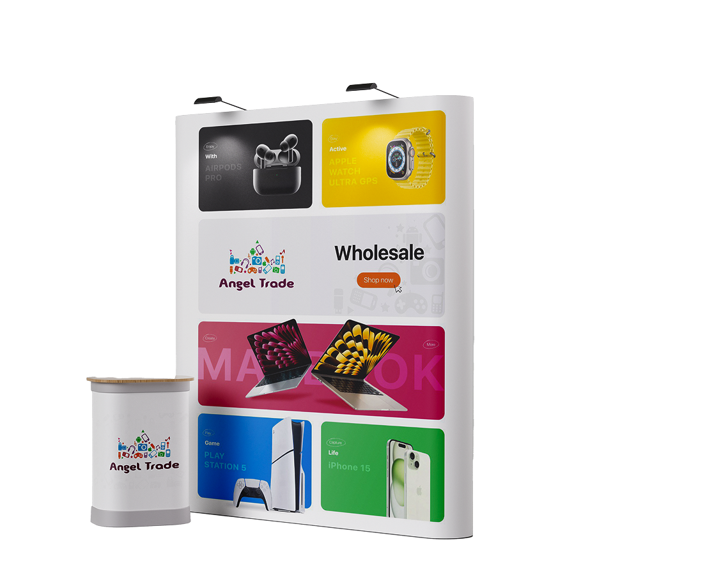
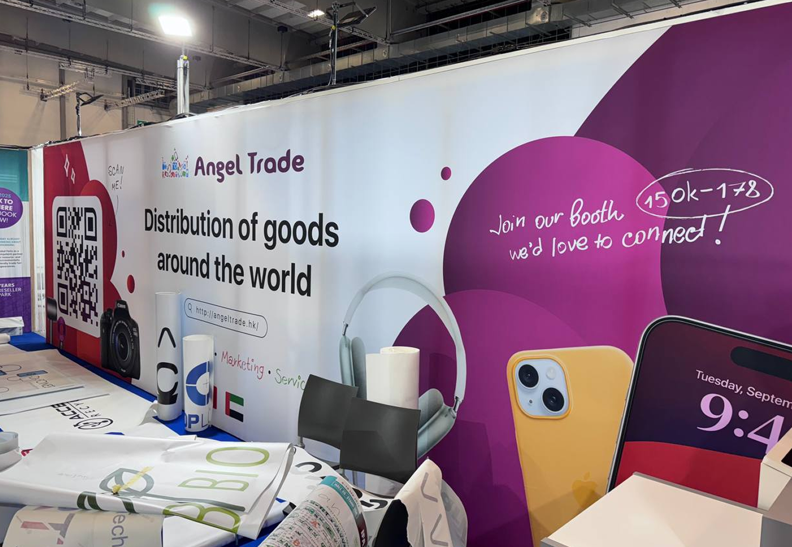
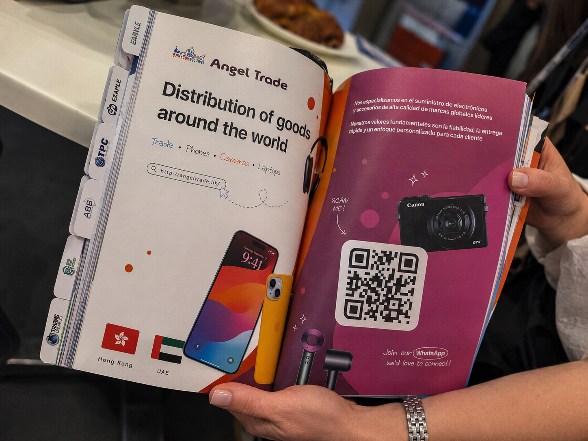

← Selected work
ANGEL
TRADE
TRADE
A three-year exhibition system built across Europe, Asia & the MENA region.
2022 — 2025


Installed · GITEX Global 2024 · Dubai

Print · ITC Malta 2025
Catalogue spread
Two-page ad for the official exhibitor catalogue. Localised Spanish copy, scannable QR for WhatsApp follow-up, optimised for the table-top reading angle.
What I did
Owned visual design end-to-end for ITC Malta 2025, GITEX Global 2024 (Dubai), and IFA Berlin 2024 & 2025. Booth graphics, hanging banners, signage, presentation decks, motion graphics, magazine ads, and on-screen visuals.
Why it matters
A 30-square-metre booth in a hall of 600 has to do three things at once: announce itself across an aisle, hold up to a five-second walk-past, and reward the visitor who stops to read. The system let the team focus on what was actually new each show.
Outcomes
- 70%Faster booth design
- 4International shows
- 3Continents
- 3 yrsRemote partnership